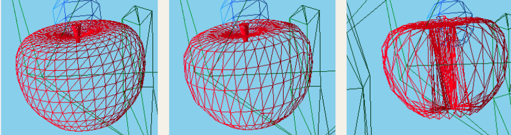
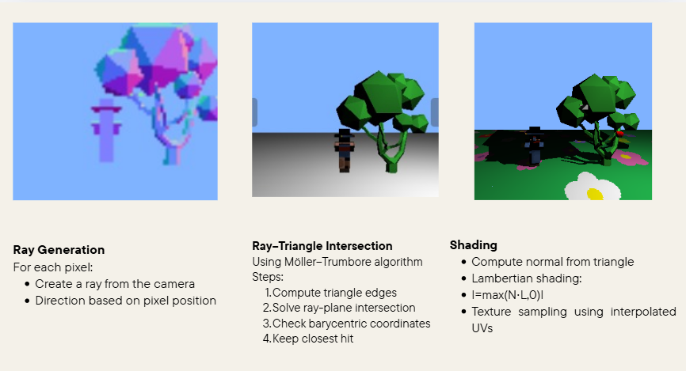

The idea
One scene. A lot of computer graphics.
Life Is Good started as a simple, deliberately playful scene: a Minecraft villager walks through a flower field alongside a bee and a rhino, while an apple hangs from a low-poly tree.
Then things start moving. The apple falls and bounces, fluid particles enter the scene, and switching to disco mode changes the lighting and makes the villager start dancing.
Behind the silly scene, the goal was to experiment with several fundamental areas of computer graphics and bring them together inside the same project.
Project demo
Better seen in motion.
A lot of this project is difficult to communicate through screenshots alone. The demo shows the scene itself as well as the geometry transformations, animations, simulation and rendering experiments I implemented.
01 — Geometry Processing
Changing the geometry itself.
I implemented several operations directly on the meshes: Laplacian smoothing, Taubin smoothing, curvature-weighted smoothing and mesh decimation.
Laplacian smoothing successfully removed small geometric irregularities, but also revealed its classic drawback: repeated smoothing causes the mesh to shrink. I therefore implemented Taubin smoothing, which alternates positive and negative Laplacian steps to smooth the surface while better preserving its volume.
I also implemented mesh decimation through edge collapse. This became useful later when ray tracing the scene: reducing unnecessary triangles could substantially reduce rendering time while keeping the overall shape recognizable.

02 — Simulation
Making things fall, bounce and flow.
The apple is not simply animated along a predefined path. I adapted a rigid-body solver to model it as a sphere affected by gravity, collision, restitution, friction and torque, allowing it to fall, bounce and roll across the ground. I also have some other movements in my scene : The villager is dancing, and the bee is flying around!
03 — Rendering
From real-time shadows to my own ray tracer.
For the interactive scene, I implemented shadow mapping using a two-pass rendering pipeline. The scene also supports several dynamic light sources, including the animated colored lights used by disco mode.
Separately, I built a small educational ray tracer from scratch. It generates primary rays from a pinhole camera, performs ray-triangle intersections using Möller–Trumbore, interpolates texture coordinates, applies Lambertian shading and casts secondary rays for hard shadows.

I really loved creating this scene
This project gave me the freedom to connect techniques that I had previously encountered separately: mesh processing affects rendering cost, simulation introduces numerical stability problems, and rendering choices quickly expose performance limitations.
More than producing a polished scene, I enjoyed using Life Is Good as an experimental playground implementing algorithms, breaking them, understanding why, and gradually making the scene come alive!!